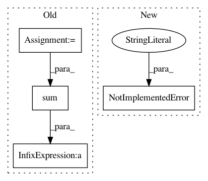

1ff8c3da9838d71d3c5fbe91dcef50b160f5660c,cleverhans/future/jax/attacks/fast_gradient_method.py,,fast_gradient_method,#Any#Any#Any#Any#Any#Any#Any#Any#,8
Before Change
abs_grads = np.abs(grads)
sign = np.sign(grads)
max_abs_grads = np.amax(abs_grads, axis=axis, keepdims=True)
tied_for_max = np.asarray(np.equal(abs_grads, max_abs_grads), dtype=np.float32)
num_ties = np.sum(tied_for_max, axis=axis, keepdims=True)
perturbation = sign * tied_for_max / num_ties
elif ord == 2:
square = np.maximum(avoid_zero_div, np.sum(np.square(grads), axis=axis, keepdims=True))
perturbation = grads / np.sqrt(square)
After Change
if ord == np.inf:
perturbation = eps * np.sign(grads)
elif ord == 1:
raise NotImplementedError("L_1 norm has not been implemented yet.")
elif ord == 2:
square = np.maximum(avoid_zero_div, np.sum(np.square(grads), axis=axis, keepdims=True))
perturbation = grads / np.sqrt(square)
In pattern: SUPERPATTERN
Frequency: 3
Non-data size: 4
Instances
Project Name: tensorflow/cleverhans
Commit Name: 1ff8c3da9838d71d3c5fbe91dcef50b160f5660c
Time: 2019-06-27
Author: papernot@google.com
File Name: cleverhans/future/jax/attacks/fast_gradient_method.py
Class Name:
Method Name: fast_gradient_method
Project Name: fgnt/pb_bss
Commit Name: 2609d52df05be04ff1f964fcb2af156493570636
Time: 2016-08-22
Author: mail@lukas-drude.de
File Name: nt/speech_enhancement/mask_estimation.py
Class Name:
Method Name: quantile_mask
Project Name: SheffieldML/GPy
Commit Name: 96f189113ac037bbb709535c9c75997571c225f6
Time: 2013-10-15
Author: alan.daniel.saul@gmail.com
File Name: GPy/likelihoods/noise_models/gaussian_noise.py
Class Name: Gaussian
Method Name: _nlog_mass